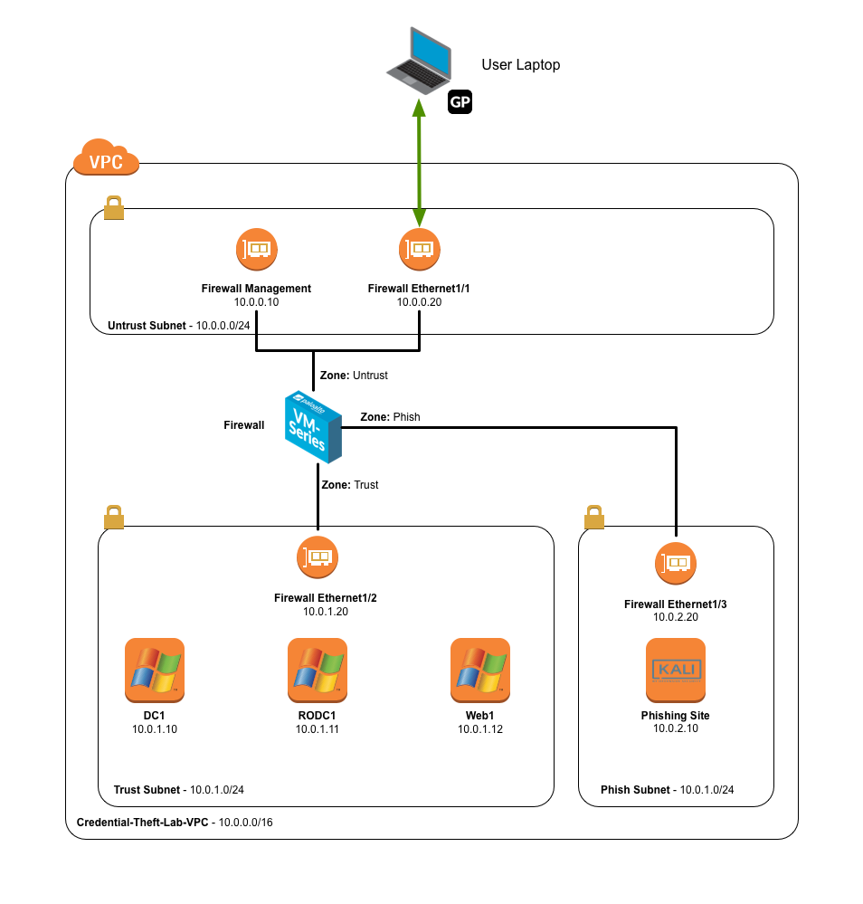

Credential Theft Lab
Background
Phishing attacks to obtain valid corporate credentials are one of the common factors in many breaches today. If the attacker caon obtain valid credentials, they can walk right into the enterprise network bypassing most security solutions and not arouse any suspicions.
In this lab, we will see how we can use URL Filtering capabilities to prevent exposure of corporate credentials.
Lab Diagram
You will instantiate an AWS CloudFormation template that builds the below environment. It will create the VPC, subnets, security groups, and instances shown. You will then connect into the environment using the GlobalProtect client.

Access Details
You will need this information throughout the lab.
Table 1 - Lab Instances
| Device | IP | Username | Password |
|---|---|---|---|
| Firewall | Set by CloudFormation | admin | Set by user |
| Domain Controller | 10.0.1.10 | Administrator | paloalto |
| Read Only Domain Controller | 10.0.1.11 | Administrator | paloalto |
| Web Server | 10.0.1.12 | Administrator | paloalto |
| Phishing Site (Kali Linux) | 10.0.2.10 | kali | paloalto |
Table 2 - Corporate Active Directory Accounts - Credlab.local
| Username | Password |
|---|---|
| Administrator | paloalto |
| user1 | paloalto |
| user2 | paloalto |
| user3 | paloalto |